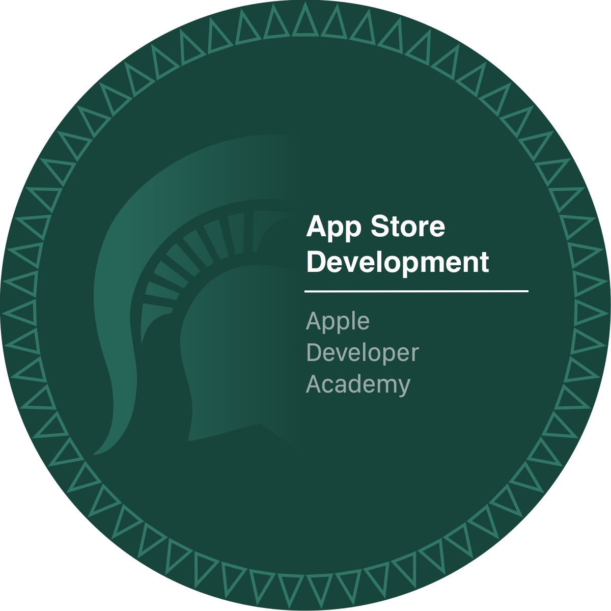

About Me
iOS & full-stack engineer and co-founder of CH Studios LLC, based in Detroit.

My Story
I'm a Colorado State University graduate turned full-stack engineer, recently graduated from the MSU Apple Developer Academy in Detroit. My transition into software was driven by curiosity and a desire to build things that are genuinely useful — products that feel intuitive, accessible, and well-crafted from day one.
In under a year I've shipped three apps to the App Store, contributed to open source projects across Python, Go, TypeScript, and Vue.js, and built production AI integrations that put real businesses inside conversational AI interfaces. I co-founded CH Studios LLC to build vertical SaaS platforms for Detroit small businesses — and shipped WebMCP the same week Google announced it at I/O 2026.
My most distinctive work sits at the intersection of AI and product: I architected an MCP server that lets customers browse menus and place orders through Claude, and a WebMCP integration that makes storefronts queryable by Gemini directly from Chrome — no API connection required.
Outside of code I ride bikes, explore Detroit restaurants, volunteer at local food banks, and plant trees with The Greening of Detroit.
Currently seeking full-time web or iOS developer roles — ideally on teams building products that serve real people. Let's connect.
Working With Me
- Operating environment: Adaptable, comfortable in open/public spaces, and flow-state oriented. Punctual and respectful of team time.
- Hours: Generally 9:30 AM – 5:30 PM, flexible for project needs.
- Communication: Mobile-first (text is fastest), I prefer written feedback and clear, actionable direction.
- Learning style: Visual, hands-on, and self-sufficient. I love cheat sheets and trial-and-error until mastery.
- Strengths: Adaptability, reliability, and organization.
- Struggles: Vague instructions and expected instant mastery without examples.
- Philosophy: "To be early is to be on time." "Measure twice, cut once."
- Personal interests: Cycling, food, Detroit Tigers, Zelda, and music.
What I Build
I build full-stack web platforms and SwiftUI iOS apps with an emphasis on accessibility, interaction design, and maintainable architecture.
Web and backend:
- Full-stack Node.js/Express platforms with Supabase, PostgreSQL, Stripe, and Twilio
- AI-accessible systems using Anthropic MCP SDK and Google WebMCP
- Admin dashboards covering orders, inventory, analytics, CMS, and customer management
- Payment flows including subscriptions, gift cards, deposits, and webhook-driven fulfillment
iOS:
- SwiftUI app development with CoreML, SpriteKit, SwiftData, and WidgetKit
- Cross-platform UX for iPad and macOS including full keyboard compatibility
- Accessibility-first development with VoiceOver, Dynamic Type, and Live Activities
- On-device ML inference with XGBoost and ONNX
How I Learned
I didn't learn from a formal curriculum — I learned by doing. I've spent hours in browser DevTools inspecting how real sites work, breaking things apart and rebuilding them. I watch tutorials, then immediately apply what I learned to real projects. When I hit a wall, I don't stop — I dig in, try every angle, and figure it out. That's how I've picked up SwiftUI, web development, AI tooling, and everything in between.
My Tech Journey
-
›May 2026: Graduated Apple Developer AcademyCompleted Apple's official developer program — iOS, Swift, and the full Apple platform stack.Program: Apple Developer Academy
Completed: May 2026
Focus: Swift, SwiftUI, UIKit, Xcode, App Store distribution, and Apple design principles.
Significance: Formal recognition of the skills I'd been building through real shipped apps — a full-stack iOS developer certified by Apple itself.
Certificates: All 5 program certificates completed. -
›Apr 2026: Turned proFirst paid software contract — Cross-Platform Engineer at Tripsetta.Company: Tripsetta
Role: Cross-Platform Engineer
Location: Detroit, MI · Part-time contract
About: Contracted to maintain and deliver feature updates across iOS, Android, and web, working directly with the founder across the full product surface.
Significance: First paid software contract — first time being trusted to keep a real company's live products running for real users. -
›Apr 2026: Co-founded CH Studios DetroitSoftware Studio · Est. 2026Studio: CH Studios Detroit
Type: LLC · Software Studio
Location: Detroit, Michigan
About: A Detroit-based software studio crafting mobile apps and full stack products.
Role: Co-founder -
›Apr 2026: Published TakeFlight to the App StoreSecond app live — a SpriteKit survival game for iPad and macOS.TakeFlight — A Bird's Life
Platform: iPadOS & macOS (SpriteKit)
Role: Co-developer — game systems, mini-game design, and release.
Key features:- Five connected mini-games in a cohesive survival narrative
- Full keyboard support for iPad and macOS
- SpriteKit physics and game loop architecture
-
›Mar 2026: Earned Apple Ads CertificationCompleted the Apple Ads Certification exam.Certificate: Apple Ads Certification
Focus: App Store marketing, campaign setup, optimization, and analytics.
Outcome: Gained expertise in driving app growth and visibility through Apple Ads. -
›Mar 2026: Published first app to App StoreLaunched Stamped! A City Passport for real users.Stamped! A City Passport
Platform: iOS (SwiftUI)
Role: Solo product designer and iOS developer.
Key features:- Global city explorer with hierarchical grouping and mixed search
- Passport gallery with mastery tiers and stamp animations
- AI-curated itinerary cards with Apple Intelligence integration
- Accessibility-focused: high contrast, reduced motion, dark mode
-
›Feb 2026: Contributed to CommonSight iOS appFirst professional iOS contribution; program discontinued due to funding.Role: iOS Contributor
Organization: We Change Community Consulting
Duration: Feb 2026 – Apr 2026 · Program discontinued due to funding loss
Key contribution: Helped build an app demo for a business owner to show investors. -
›Sep 2025: Started at Apple Developer AcademyBegan formal tech education in Detroit.Program: 9-month, in-person in downtown Detroit
Focus: Coding, design, and business fundamentals using Apple tools
Schedule: 20 hours/week, hands-on projects and teamwork
Apple Developer Academy Detroit
Certificates: Completed all 5 program certificates Introduction to Game Development
Introduction to Game Development
 Introduction to iOS App Development
Introduction to iOS App Development
 UI Design & Swift Fundamentals
UI Design & Swift Fundamentals
 User Centered Development
User Centered Development

App Store Development
What Guides Me
My approach is simple: understand the user context, build with intention, and ship work that is clear to both users and stakeholders. Accessibility, clarity, and thoughtful details are not extras — they are the work.
I believe strong products start with user empathy and are sustained by clean, reliable implementation.
I believe design should reduce friction, clarify decisions, and make complex systems feel simple.
I believe accessibility should be integrated from the first prototype through final iteration.
I believe great software respects platform strengths and meets people where they are across devices.